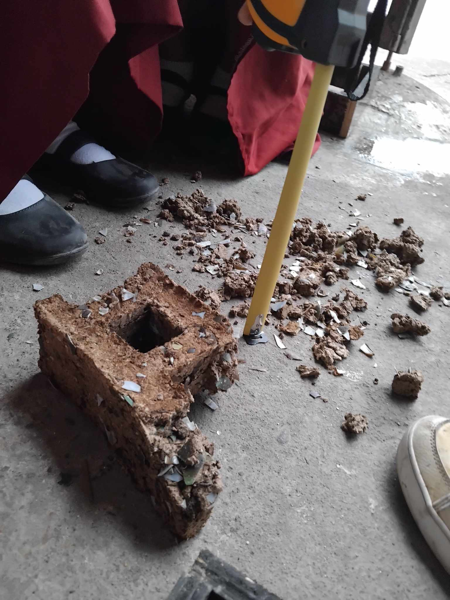

my projects!
these are my projects, from the past to current. 😭😭😭
making hollowblocks out of carabao manure & waste paper & shells
this was the craziest thing i have ever done for a grade 😭
so in this project, we utilized dried carabao dung, waste papers and then shells gathered from locals in the city. we put the dung in a container and put a lot of water in that container (add an emphasis on 'a lot') and then we mixed it.
we then ripped the waste papers. we also cooked the shells first, cooked it, and get the insides of the shells out. we then smash the shells with a hammer.
and then we mixed those 3 things together and we dried it in the sun. (good thing that there was a heat index during that project, so it really helped with drying the bricks)
making a discord economy bot.
bing bong i create bot discord that does economy stuff and stuff
i used python, mongodb <-- (to store the items, and coins of players).